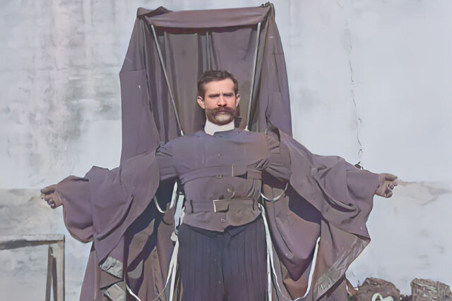
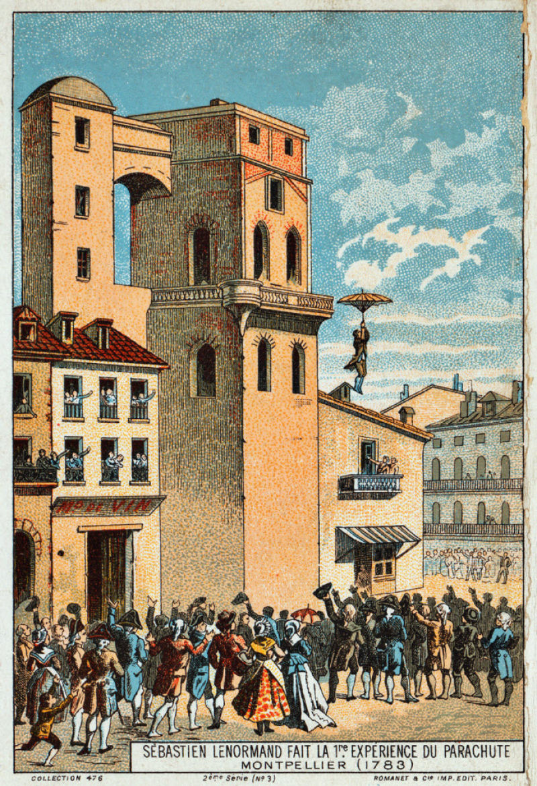

Franz Reichelt, o Alfaiate Voador

Nós já falamos em um par de oportunidades, a en passant, sobre o "pioneiro" Franz Reichelt, mas hoje vamos dedicar todo este artigo à sua história kafkiana e absurda.O acervo de filmes da British Pathé tem um vídeo assustador dele pulando para a morte da Torre Eiffel, em 1912.
Nas cenas ele usa um traje enorme, precursor do wingsuit, enquanto permanece sorumbático de pé na saliência do primeiro nível da torre.
Franz hesita por alguns longos segundos e então mergulha e cai direto no chão.

O austríaco Franz Reichelt era dono de uma bem-sucedida alfaiataria em Paris. Pouco depois de abrir a loja, ele ficou obcecado em desenvolver um tipo de paraquedas que pudesse vestir para ser usado como um traje que proporcionasse sustentação em um salto de quaisquer alturas.
O princípio de funcionamento do paraquedas básico foi elaborado por inventores centenas de anos antes dos humanos levantarem vôo, primeiro em balões e depois em aviões. Um dos primeiros esboços de um paraquedas de estrutura rígida pode ser encontrado nos cadernos de notas de Leonardo da Vinci.
- "Se um homem tiver uma tenda feita de linho, com as aberturas tapadas e com doze braços de largura e doze de profundidade, ele será capaz de se jogar de qualquer grande altura sem sofrer qualquer lesão", escreveu ele.
O inventor croata Fausto Veranzio melhorou o design de Da Vinci substituindo o dossel por um pedaço de pano parecido com uma vela protuberante. Embora muitas fontes afirmem que Veranzio testou o paraquedas saltando da Catedral de St Martin em Bratislava, provavelmente nunca ocorreu.
Foi só no final do século 18, quando um francês chamado Louis-Sébastien Lenormand deu o primeiro salto de paraquedas com sucesso e em seguida cunhou a palavra "parachute".

Com o alvorecer da aviação e os trágicos acidentes que resultaram de desventuras aéreas, a necessidade de um paraquedas funcional foi fortemente sentida. Foi Charles Broadwick quem projetou o primeiro paraquedas dobrável que podia ser usado nas costas e desenrolado com a ajuda de uma linha estática presa ao balão ou avião. Em uma demonstração bem-sucedida em 1911, Charles jogou um manequim do topo da Torre Eiffel. A linha estática ficou tensa, puxou o paraquedas da mochila usada pelo manequim e então a linha se rompeu.
Nosso herói, Franz Reichelt também começou a trabalhar com paraquedas "vestíveis". Seus primeiros projetos usavam 6 metros quadrados de tecido e pesavam 70 kg pouco práticos. Todos os experimentos que ele conduziu com manequins do pátio de seu prédio na rua Gaillon falharam.
No entanto, Franz perseverou e conseguiu reduzir o peso do traje para menos de 25 kg, dobrando a área de superfície do material usado. Mas seus testes ainda não tiveram sucesso e seus manequins invariavelmente caíam pesadamente no chão. O próprio Franz quebrou a perna ao tentar um salto de 10 metros sobre uma pilha de palha.
Apesar de suas repetidas falhas, ele recusou-se a ver qualquer falha em seu projeto. Ao contrário, estava convencido de que, se pudesse aumentar a distância de lançamento, seu paraquedas seria um sucesso, pois daria aos flaps mais tempo para se desenrolarem adequadamente.

Franz começou a solicitar às autoridades permissão para conduzir experimentos na Torre Eiffel, mas foi rejeitado a cada vez. Após um ano de tentativas, ele acabou conseguindo a permissão para fazê-lo, sob a condição de que o teste fosse realizado por um manequim. Franz concordou, mas esse nunca foi seu plano.
No dia do teste, 4 de fevereiro de 1912, Franz chegou à Torre Eiffel vestido com seu traje de paraquedas que era, segundo a imprensa, "apenas um pouco mais volumoso que as roupas comuns". O traje não restringia os movimentos do usuário quando o paraquedas estava embalado, e abrir o paraquedas era tão simples quanto estender os braços para formar uma cruz com o corpo. Depois de estendida, a roupa lembrava uma espécie de manto com um vasto capuz de seda, segundo o jornal Le Temps.
Franz informou aos jornalistas reunidos que a área de superfície do projeto final era de 30 metros quadrados, uma grande melhoria em relação aos seus primeiros projetos. O alfaiate também afirmou que o traje estava pesando apenas 9 kg.

Uma grande multidão se reuniu na base da Torre Eiffel para ver, o que eles presumiam, um manequim sendo jogado do primeiro nível do imponente marco. No entanto, quando Franz se apresentou vestindo um traje, ficou claro que sua intenção era diferente.
Apesar de estar cercado por uma multidão de policiais e repórteres, poucos tomaram a iniciativa de detê-lo. Franz ocultou suas verdadeiros intenções até o último momento, o que pegou todos de surpresa, inclusive seus amigos, que tentaram dissuadi-lo. Eles até alegaram que ele teria amplas e novas oportunidades para provar seu invento, mas Franz simplesmente não quis ouvir ninguém. Quando questionado se pretendia usar cordas de segurança, ele respondeu:
- "Quero tentar o experimento sozinho e sem truques, pois pretendo provar o valor de minha invenção."
Para aquelas objeções técnicas urgentes, como a altura da queda ser muito curta para o paraquedas abrir totalmente, Franz respondeu com desdém:
- "Você vai ver como meus setenta e dois quilos e meu paraquedas darão aos seus argumentos a mais decisiva das negações."
Por fim, Franz começou a subir as escadas. No caminho, ele fez uma pausa, voltou-se para a multidão e gritou alegremente: - "Até breve!" Seus amigos continuaram a tentar dissuadi-lo do salto, mas foram incapazes de abalar sua determinação. No primeiro convés da torre, com um pouco mais de 57 metros de altura, Franz ficou na saliência e hesitou por 40 segundos completos. Então saltou.
O paraquedas de Franz mal se abriu. Ele caiu como um tijolo enrolado em seu próprio traje. Franz estava morto antes que os primeiros espectadores corressem para a massa mutilada de carne, ossos e tecidos. Seus olhos estavam supostamente abertos e dilatados de terror.